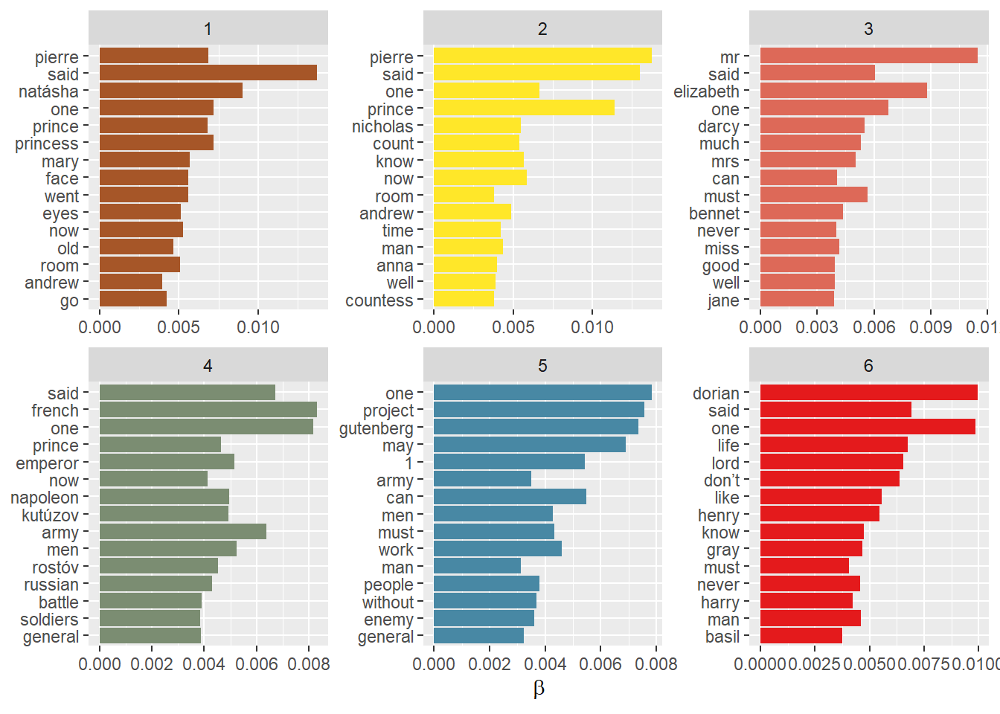
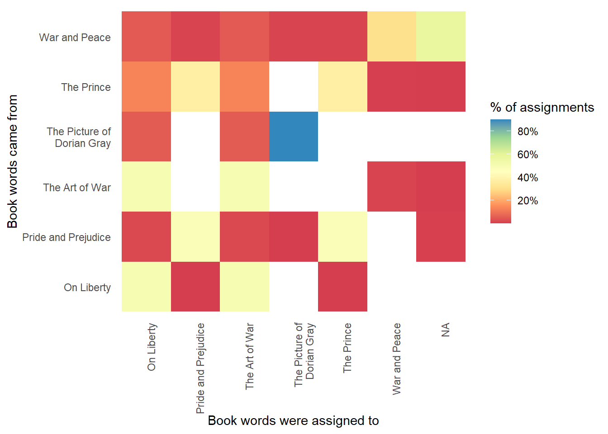
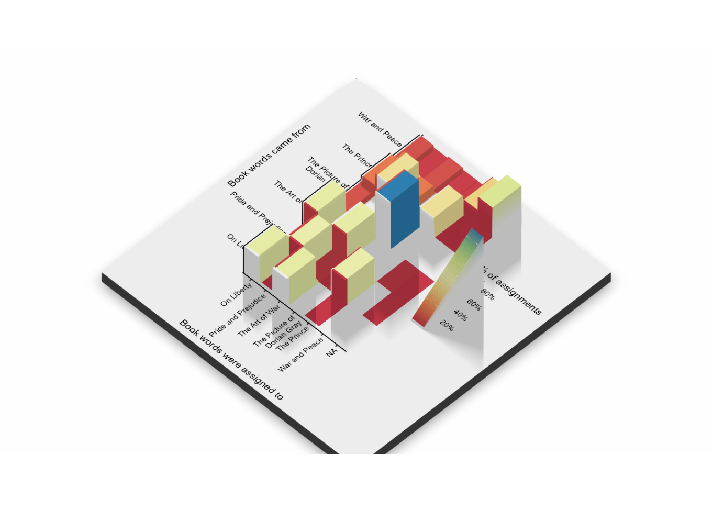
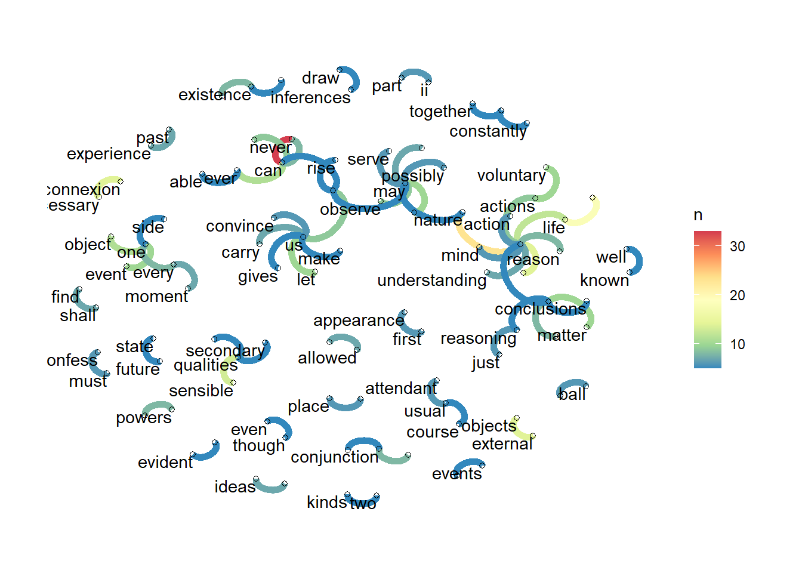

Learn how topic modelling and word networks find structure in text nobody labelled
text
topic modelling
LDA
ngrams
network
book
Shuffle the chapters of six classic books and let topic modelling (LDA) stitch them back together, then map how David Hume’s ideas connect as a network of word pairs.
Author
Nelson Amaya
Published
July 31, 2022
Modified
October 6, 2026
“You shall know a word by the company it keeps.” –J.R. Firth
In Data from words you turned prose into tidy, one-word-per-row data and counted it. Counting tells you what a text says. This lesson asks a harder question: what is a text about –and how do different texts relate to one another– when nobody has labelled anything?
Level: Intermediate · Time: ~45 min · Prerequisites: Data from words · Tools: gutenbergr, tidytext, topicmodels, ggraph
You will learn to
Download several books at once from Project Gutenberg with gutenbergr.
Break books into chapters and turn them into a document-term count table.
Fit a topic model (LDA) and read its word-topic (\(\beta\)) and document-topic (\(\gamma\)) probabilities.
Check how well the model recovered the truth, chapter by chapter.
Turn pairs of adjacent words (bigrams) into a network and plot it with ggraph.
A cool application of text analysis, topic modelling, tries to answer a very practical question: Take two or more texts. How are they related to one another?
Imagine the following situation. Someone scrambles all chapters of all OECD reports written over the past year, leaving thousands of files without names or any indication of which report they belong to. You know how many reports there were originally and are tasked to stitch back together all reports. How would you do that?
Using statistical techniques over text data pulled from all the scrambled chapters, you can try to infer how each leftover document is similar in style, content, word frequency and other features of the text to try to estimate how likely it is that 2 documents belong to the same report.
We’ll do exactly this but not over OECD reports, because that would be too boring. So we’ll do it over scrambled chapters from classical works of fiction and non-fiction.
Let’s first make a mess of some literature.
Choosing which books to shuffle
Project Gutenberg holds many works of literature that don’t have copyright anymore and are ready for text analysis. We’ll choose some books, download them into R using the gutenbergr package, and then break them apart by chapter in order to use topic modelling to stitch them back together.
These are the books we’ll use:
The Picture of Dorian Gray by Oscar Wilde
The Prince by Niccolo Machiavelli
Pride and Prejudice by Jane Austen
War and Peace by Leo Tolstoy
On Liberty by John Stuart Mill
The Art of War by Sun Tzu
# Download books ####library(gutenbergr)library(tidytext)library(tidyverse)# Save a list of all books into your environment ####pg_all <- gutenbergr::gutenberg_metadata# Books to break down with names and IDs ####1shuffle_titles <-tribble(~title,~gutenberg_id,"The Art of War", 17405,"The Prince", 26253,"On Liberty", 34901,"Pride and Prejudice",1342,"War and Peace",2600,"The Picture of Dorian Gray",174 )# Download the books ####2shuffle_books <- gutenbergr::gutenberg_works(gutenberg_id %in% shuffle_titles$gutenberg_id) |> gutenbergr::gutenberg_download(meta_fields ="title", mirror ="https://gutenberg.pglaf.org/")# Make sure all books were downloaded ####shuffle_books |> dplyr::distinct(title)
1
Create a tribble with the Gutenberg ID for each book
2
Download all the books. Use another mirror if the download does not work.
# A tibble: 5 × 1
title
<chr>
1 The Picture of Dorian Gray
2 Pride and Prejudice
3 War and Peace
4 The Art of War
5 On Liberty
Alternatively, you can read the plain text files for each book, as the gutenbergr mirrors might not work using the readLines function:
# Add URL for plan text for each book ####shuffle_titles_url <-tribble(~title,~gutenberg_id, ~url,"The Art of War", 17405,"https://www.gutenberg.org/cache/epub/132/pg132.txt","The Prince", 26253,"https://www.gutenberg.org/cache/epub/57037/pg57037.txt","On Liberty", 34901,"https://www.gutenberg.org/cache/epub/34901/pg34901.txt","Pride and Prejudice",1342,"https://www.gutenberg.org/cache/epub/1342/pg1342.txt","War and Peace",2600,"https://www.gutenberg.org/cache/epub/2600/pg2600.txt","The Picture of Dorian Gray",174,"https://www.gutenberg.org/cache/epub/174/pg174.txt" ) # Get all text from the books ####shuffle_books <- shuffle_titles_url |> dplyr::mutate(text =map(url, ~readLines(.x, warn =FALSE))) |> tidyr::unnest(text)
Shuffling, breaking books apart
Now we carry out the shuffling: we identify book chapters and create a chapter indicator for each book. We then use it to break the books apart, and then break the chapters apart into words which we will model.
Build a chapter counter: str_detect() flags the lines that start a new chapter, and the cumulative sum cumsum() turns those flags into a running chapter number for every line
5
Ungroup the data
6
Filter out the text before the first chapter
7
Using the unite() function we can create a new variable with the title and chapter columns called document
8
Unnest the tokens in the text column
9
Remove stopwords
10
Count how many times each word appears in each document with count(), sorted from most to least frequent
What chapter belongs to which book? LDA all-at-once approach2
To see which chapters belong to which books, we will use a technique called Latent Dirichlet Allocation, LDA. This is a statistical model that estimates the probability of a particular word from a chapter to belong to a topic, and then we can use that probability across chapters to reassemble each book.
LDA works by assuming that, when writing a text, the author draws a mixture of topics: a set of weights that describe how prevalent each topic will be in the text. Given those weights, the author writes the actual text. For each word in the text, the author draws the word’s topic. Then, conditional on the topic, the word is drawn from a topic-specific distribution –a list of words. This topic-specific distribution is common across the documents and defines the rates at which words appear when discussing a particular topic.
LDA estimates two key probabilities: Word-Topic (\(\beta\)) and Document-Topic (\(\gamma\)). That is, it finds the mixture of words that is associated with each topic, and the mixture of topics that describes each document.
What is a topic? In LDA, topics are latent variables, variables we can’t observe, that capture the underlying theme or meaning of a set of words in a text. In LDA, a document is modelled as a mixture of latent topics, where each topic is a probability distribution over the words in the vocabulary. Topics are probability distributions of terms.
For instance, in news articles, a topic might represent the probability distribution over words such as politics, government, sports or election. In a scientific publication, topics might represent the probability distribution over words such as science, research and technology.
Topics are inferred by the LDA model, and the number of topics is usually specified by the modeler before training the model. LDA will group words together in the corpus, creating topics based on the co-occurrence of words in the documents. These inferred topics can be used for different downstream tasks such as document classification, which is what we’ll do.
flowchart LR
Words:::word-- Beta --> Topics:::topic -- Gamma --> Document:::doc
classDef word fill:#E4AD07
classDef topic fill:#CA0505
classDef doc fill:#E46507
Before estimating our model, we need to transform the data we tokenized into a Document Term Matrix, which is needed as an input for the function that actually estimates the model. This is easy enough using the cast_dtm() function.
Then we estimate our model. We use \(k = 6\) because we have 6 books, and run the model with the LDA() function from topicmodels:
library(tidytext)library(tidyverse)library(topicmodels)library(scales)shuffle_dtm <- chapter_word |>11 tidytext::cast_dtm(document, word, n)# estimate LDA12shuffle_lda <- topicmodels::LDA(shuffle_dtm,# As many topics as books, but we can include more if we wanted to13k =length(unique(shuffle_titles$gutenberg_id)),# For reproduciblity 14control =list(seed =1234))
11
Create a document-term matrix from the chapter_word data frame using the cast_dtm() function. Look at the result
12
Use the LDA() function by providing the document-term matrix and the number of topics you want to model
13
k represents the number of topics.
14
We use a seed to make sure the results replicate
Let’s look at the words with the highest probabilities to below to each of the 6 topics. There are clearly some words from each book that are more salient in some topics. Let’s get serious and use all the model results.
library(tidytext)library(tidyverse)library(topicmodels)library(scales)library(broom)# Plot15broom::tidy(shuffle_lda, matrix ="beta") |> dplyr::group_by(topic) |> dplyr::slice_max(order_by = beta, n =15) |>ggplot(aes(x= term |>reorder(beta), y= beta, fill=topic)) +geom_col() +coord_flip()+scale_fill_distiller(palette="Set1")+facet_wrap(~topic, scales ="free") +labs(x =NULL, y =expression(beta))+theme(legend.position ="none")
15
Extract the \(\beta\) probabilities from the model, word-topic probabilities.

Working with word-topic (\(\beta\)) and topic-book (\(\gamma\)) probabilities
\(\beta\) controls the distribution of words within a topic. It is a Dirichlet prior on the per-topic word distributions. In other words, it represents the probability of a specific word being present in a topic. A higher beta value will result in a more diverse set of words within a topic, while a lower beta value will lead to a more focused set of words.
\(\gamma\) controls the distribution of topics within a document. It is a Dirichlet prior on the per-document topic distributions. It governs the probability of a specific topic being present in a document. A higher gamma value will result in a more diverse set of topics within a document, while a lower gamma value will lead to a more focused set of topics.
We extract model results in tidy format using the broom package tidy() function, which extracts model results in our favourite format. Let’s look in detail at model results for both key parameters.
We can see that \(\gamma\) worked well for some books, not so much for others.
Let’s look more closely at the classification –where it succeeded and where it failed.
Did it work?
To know how well the topic classification worked, we build a tile grid to relate how many chapters from each book were correctly classified into the book they originated from.
Now the picture is clearer. Some books, the shortest and distinct from the others, were for the most part correctly classified.
To get better results from this approach we need to delve deeper into the tuning parameters of the model or try an entirely different text-data approach.
library(tidytext)library(tidyverse)library(topicmodels)library(scales)# Save chapter classifications ####chapter_classifications <- broom::tidy(shuffle_lda, matrix ="gamma") |> tidyr::separate(document, c("title", "chapter"), sep ="_", convert =TRUE) %>% dplyr::group_by(title, chapter) %>% dplyr::slice_max(gamma) %>% dplyr::ungroup()# Save most likely topics for each book ####19book_topics <- chapter_classifications %>% dplyr::count(title, topic) %>% dplyr::group_by(title) %>% dplyr::slice_max(n, n =1) %>% dplyr::ungroup() %>% dplyr::transmute(consensus = title, topic)# Join the results ####20chapter_classifications %>% dplyr::left_join(book_topics, by ="topic") %>% dplyr::filter(title != consensus)# Add Document Term Matrix data to results and join book classifications ####assignments <- broom::augment(shuffle_lda, data = shuffle_dtm) |> tidyr::separate(document, c("title", "chapter"), sep ="_", convert =TRUE) %>% dplyr::left_join(book_topics, by =c(".topic"="topic"))# Visualise the result ####assignments %>% dplyr::count(title, consensus, wt = count) %>%21 dplyr::mutate(across(c(title, consensus), ~str_wrap(., 20))) %>% dplyr::group_by(title) %>% dplyr::mutate(percent = n /sum(n)) %>%ggplot(aes(consensus, title, fill = percent)) +geom_tile() +scale_fill_distiller(palette ="Spectral", direction=1,label =percent_format()) +theme_minimal() +theme(axis.text.x =element_text(angle =90, hjust =1),panel.grid =element_blank()) +labs(x ="Book words were assigned to",y ="Book words came from",fill ="% of assignments")
19
Save the most-likely result as a consensus variable
20
Join the consensus result to the data
21
Notice across() which facilitates applying a function to multiple columns

# A tibble: 158 × 5
title chapter topic gamma consensus
<chr> <int> <int> <dbl> <chr>
1 On Liberty 1 5 0.957 The Art of War
2 On Liberty 2 5 0.971 The Art of War
3 On Liberty 3 5 0.975 The Art of War
4 On Liberty 4 5 0.975 The Art of War
5 On Liberty 5 5 0.994 The Art of War
6 On Liberty 6 5 1.000 The Art of War
7 On Liberty 7 5 0.992 The Art of War
8 On Liberty 8 5 1.000 The Art of War
9 On Liberty 9 5 1.000 The Art of War
10 On Liberty 10 5 1.000 The Art of War
# ℹ 148 more rows

(You’ll learn how to do this later)
Bonus track: Networks of n-grams in the work of David Hume
There are many types of relational analysis you can do with text. An interesting one is how expressions, measured as n-grams (adjacent words), are related to one another using networks. We’ll use David Hume’s An Enquiry Concerning Human Understanding to illustrate, which we will import from Project Gutenberg.
We will tokenize differently using the n-grams output option in the unnest_tokens() function. We need to decide how many adjacent words will be tokenized, so for ease we will do pairs of words.
After we tokenize and count, we need to turn each pair of words into a network, which is easy using the igraph package and then well use the ggraph package to visualise it. Networks are made of nodes and edges, and in this case an n-gram of two words means two nodes are connected to each other by an edge. Using the graph_from_data_frame() function, we can turn a tibble made of pairs of words into a network.
Look at the code below that shows all the steps, from tokenizing to plotting the network. Notice the changes in ggraph, like the layout (an algorithm that places nodes in the graph according to their properties) and the geoms –for both edges and nodes.
But also look at the results. The n-grams show relationships between key concepts in this important work on epistemology, like natural events, or how reasoning is connected to observation, the mind and matter.
library(ggraph) # ggplot2 tools for networkslibrary(tidygraph) # Tidy objects for networkslibrary(igraph) # the workhorse for network analysis in Rlibrary(gutenbergr) # To import books from Project Gutenberglibrary(tidytext)library(tidyverse)library(RColorBrewer)library(viridis)gutenbergr::gutenberg_download(gutenberg_id =9662, mirror ="http://mirrors.xmission.com/gutenberg/") |> tibble::as_tibble() |>22 tidytext::unnest_tokens(input ="text",output ="ngrams",n=2,token ="ngrams",to_lower =TRUE) |>23 tidyr::separate(ngrams, into =rep(paste0("word_",1:2), sep =" ")) |>24 dplyr::filter(!word_1 %in% stopwords::stopwords(language ="en"),!word_2 %in% stopwords::stopwords(language ="en")) |> dplyr::filter(nchar(word_1) >1,nchar(word_2) >1) |>25 dplyr::count(word_1,word_2,sort =TRUE) |> dplyr::slice_max(order_by = n, n=50) |>26 igraph::graph_from_data_frame() |>27 ggraph::ggraph(layout="fr")+28 ggraph::geom_edge_arc(aes(edge_color=n), edge_width =2)+29 ggraph::geom_node_point(shape=1)+ ggraph::geom_node_text(aes(label = name), vjust =1, hjust =1, check_overlap =TRUE)+30 ggraph::scale_edge_color_distiller(palette="Spectral")+theme_graph()
22
We now create n-grams of length 2, all combinations of 2 consecutive words
23
Separate the n-grams to remove stopwords
24
Remove all stopwords and single-letter words
25
Count and keep most frequent n-grams
26
Turn data frame into igraph object to build a network using the graph_from_data_frame() function
27
Use ggraph with specified layout
28
Graph the edges or links
29
Graph the nodes and labels them
30
Clean up with theme made for networks and put a color scale on the connections

🏗 Practice 4: Shuffle the shelf
The topic model needs the full Gutenberg downloads and your own R session, but the two steps that feed it –finding what makes each document distinctive, and cutting books into chapters– run right here in your browser on Jane Austen’s novels.
NoteBasic
Counting words finds what every book shares (Mr, Mrs, time…). tf-idf finds what makes each book different: words frequent in one book but rare across the others. One blank: the two columns bind_tf_idf() needs besides the count n.
NoteHint
bind_tf_idf(term, document, n): which column holds the terms, and which one tells the books apart?
TipSolution
library(dplyr)library(tidytext)library(janeaustenr)austen_books() |>unnest_tokens(word, text) |>count(book, word, sort =TRUE) |>bind_tf_idf(word, book, n) |>slice_max(tf_idf, n =3, by = book)
Character names win: Elinor and Marianne, Darcy and Bennet, Emma… the words that make a book distinctive are often its people. That is also why topic models separate novels so easily –and why they struggle more with documents that share a cast.
ImportantIntermediate
Before you can shuffle books you need to cut them into chapters. Rebuild the lesson’s chapter counter on two Austen novels and count how many chapters each one has. Two blanks: the function that turns “this line starts a chapter” flags into a running chapter number, and the verb that keeps one row per book-chapter pair.
NoteHint
TRUE counts as 1 when you add it up, so a cumulative sum of the flags goes 0, 0, 1, 1, 1, 2… And distinct() keeps unique combinations of the columns you name.
Refit the book-shuffle LDA with k = 4 and then k = 8 instead of six topics. Which books get merged, and which get split? What does that tell you about choosing k when you don’t know the true number of documents?
Swap two of the six books for two by the same author (say, two Tolstoy novels). Does the model still tell them apart? Use the \(\beta\) probabilities to explain why or why not.
Build the n-gram network for a book of your choice, then repeat it with trigrams (n = 3). Which reveals more about the author’s ideas?
Key takeaways
Topic modelling finds latent structure in a corpus without you labelling anything by hand.
An LDA model gives you two tables: which words make up each topic (\(\beta\)), and how much of each topic is in each document (\(\gamma\)).
You can only check a topic model when you know the truth –which is exactly why shuffling books you already know is such a good way to learn it.
Tokenising into n-grams instead of single words turns text into relationships, and relationships into networks.